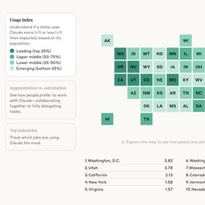
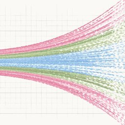
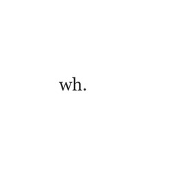

[1]. Yuke Zhao Yuke Zhao Yuke Zhao Master's student at ZIP Lab, Zhejiang University. Agents, World Models, Multimodal. hzeroyuke.github.io
[2]. Spaces 科学空间 Spaces.ac.cn 苏剑林的科学博客，写数学、物理和机器学习。 spaces.ac.cn
[3]. Anthropic Economic Index
Anthropic Economic Index 
[4]. Anthropic Economic Scenarios
Anthropic Economic Scenarios 
[5]. wh.
wh. 